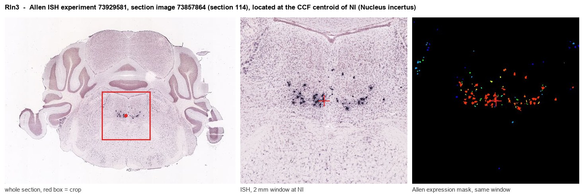
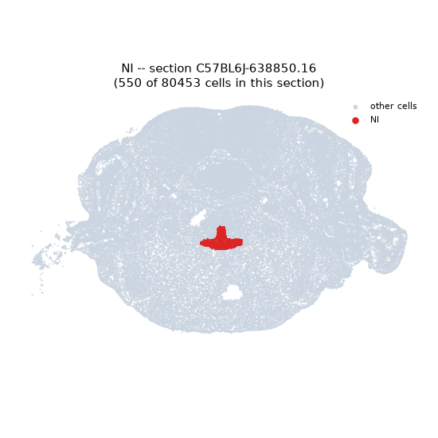
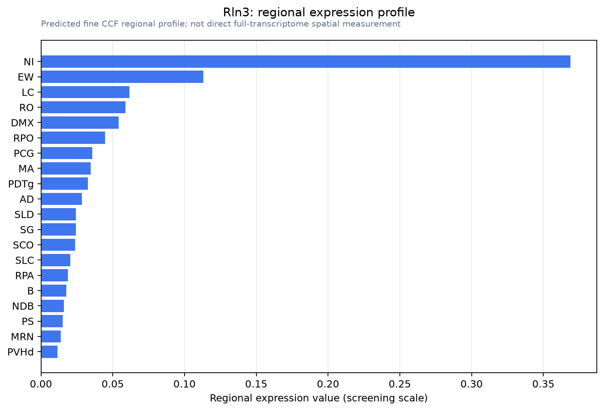

Rln3
Spatial tier: STRICT_EXCLUSIVE · Class: OTHER · Top region: NI (Nucleus incertus) · Positive regions: 2/554
54.6Discovery Score
44.7Targetability Score
CEvidence grade C
What this means: Rln3: predicted fine-region profile is strict-exclusive, with 2 positive regions out of 554 (limit 12); direct spatial validation is required.
Function in NI: evidence, prediction, innovation
- Gene function
- Rln3 encodes relaxin-3, an insulin-superfamily two-chain peptide and ligand of Gi/o-coupled RXFP3 (also RXFP1/4, lower affinity). RXFP3 lowers cAMP and engages ERK, so relaxin-3 is a slow inhibitory modulator from long-range GABAergic projection neurons.
- Region function
- The nucleus incertus is a CRF1-rich pontine nucleus projecting to septum, hippocampus, hypothalamus and limbic cortex, pacing hippocampal theta and controlling arousal, locomotor speed, stress and contextual memory.
- Published in this region
- direct NI holds the brain's largest relaxin-3 population (Smith et al. 2010 mapped Rln3/RXFP3 across arousal, stress and cognitive circuits). Nasirova et al. 2020's Rln3-Cre line shows NI Rln3 neurons are GABAergic, overlap neuromedin-B cells and form the ascending septo-hippocampal system. Callander et al. 2012 silenced NI Rln3 by viral shRNA; Ma et al. 2017, cortical desynchronisation and arousal; Lu et al. 2020, locomotor speed, arousal, hippocampal theta; Szonyi et al. 2019, contextual memory.
- Predicted function
- Prediction: relaxin-3 from NI terminals inhibits septal and hippocampal targets via RXFP3 to set theta power and arousal gain during stress. Rln3 knockdown or septal RXFP3 antagonism should flatten theta and impair spatial memory, while an RXFP3 agonist should raise theta and food intake.
- Innovation
- ★☆☆☆☆ 1/5 Relaxin-3 defines the nucleus incertus and has been manipulated repeatedly with viral, pharmacological and Cre-based tools.
- Tools
- Rln3-Cre mice, Rln3 and Rxfp3 knockouts, RXFP3-selective agonists (R3/I5 chimera, RXFP3-A2), antagonist R3(B1-22)R, AAV-shRNA Rln3 constructs, anti-relaxin-3 antibodies.
- References
Direct evidence located at the region

Allen ISH experiment 73929581, section image 73857864 (section 114): the section that contains the CCF centroid of Nucleus incertus according to the Allen image-to-atlas alignment (reference_to_image), with a 2 mm window around that point. Left: whole section, red box = window. Middle: ISH signal. Right: Allen's expression-mask view of the same window. open this image in the Allen viewer
Look it up yourself: Allen Mouse Brain ISH for Rln3Allen reference atlas: NI (structure 604)ABC Atlas MERFISH viewer(in the ABC Atlas choose dataset MERFISH-C57BL6J-638850-CCF, colour cells by gene "Rln3" or by parcellation_substructure "NI")All genes confined to NI + 3-D brain
Direct spatial evidence
MERFISH REGION LOCATOR

Regional expression figure

Predicted WMB × fine-CCF profile; not direct full-transcriptome spatial measurement.
Spatial profile
Evidence and specificity
- Evidence status
- PREDICTED_FINE
- Direct sources
- None; predicted localization only
- Exclusive threshold
- 12 positive regions out of 554
- Spatial specificity
- 0.467
- Top-region fraction
- 0.286
- Filter status
- PASS
Interpretation limits
- Cell-type-to-region projection is imputed expression, not direct spatial measurement.
- Adult reference atlases do not establish stability across age, sex, strain, state, or disease.
- Transcript abundance does not guarantee protein abundance or genetic-tool performance.